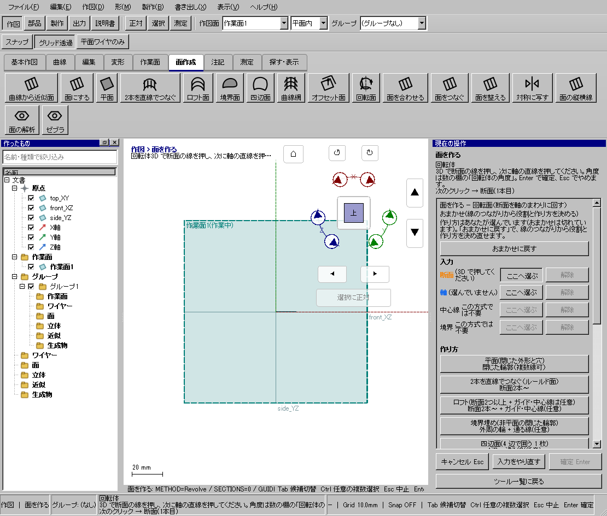
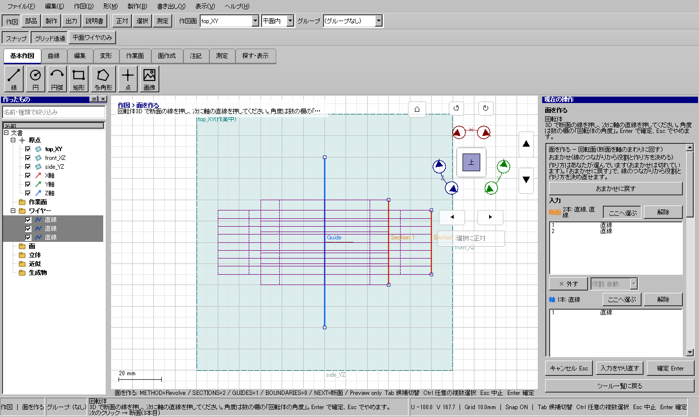
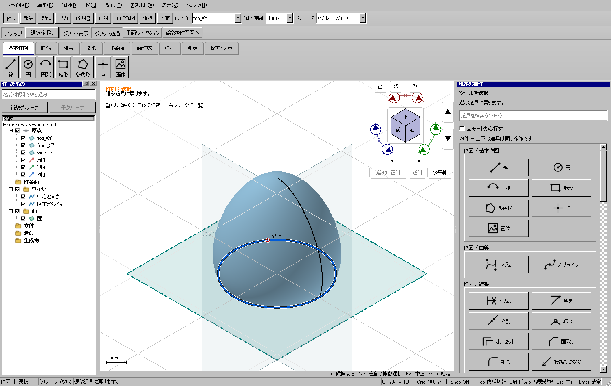
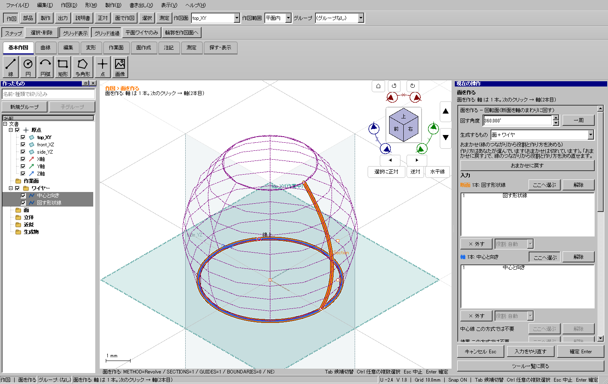
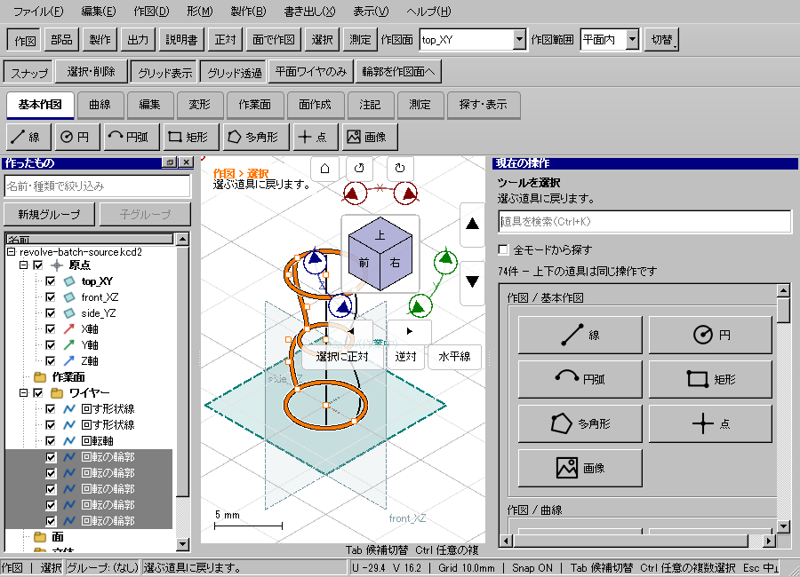

弧を軸の周囲に回して丸屋根面を作る
使う機能：回転面
軸の周りに曲線を回して厚みのない面を作ります。閉断面から体積を作る回転体と区別します。この入口は道具を構え、Enterで確定します。
軸回りに半周分の面ができる。厚みのある立体は回転体を使う。
1 準備 — 元の図形から作る
半径5mmの半円弧と、その端を通る直線軸を用意する。
まだ用意できていなければ、次の手順を先に行ってください。既にモデルがある場合も、例の座標・大きさ・面の向きを自分のモデルへ読み替えます。
- 指定座標の直線・円・円弧を準備する — 図形の作成から順に練習できます。
- 線・面・部品を取り違えずに選ぶ — 図形の作成から順に練習できます。
練習前にKCD2を別名保存します。数値の長さはmm、角度は度です。平面内のu/vと世界XYZを区別します。
2 使う道具を開く — 押す場所
- 作図 → 面作成 → その他 → 回転面
別の入口：Ctrl+K → 回転面を検索 → 候補の用途を確認して開きます。別モードなら「全モードから探す」をオンにします。

3 操作手順 — 一つずつ進める
1 回転面を選ぶ
この段階で確認：この操作で使う入力：半径5mmの半円弧と、その端を通る直線軸を用意する
2 断面の弧と軸を追加する
この段階で確認：使う対象・値：180°。面を生成する操作
3 回転角180度を指定して確定する
この段階で確認：軸回りに半周分の面ができる。厚みのある立体は回転体を使う。
4 設定する欄と数値
ボタン名・欄名と、今回使う値を対応させてください。項目が出ていない場合は作り方・モードが合っているか確認し、ペイン内をスクロールします。
| 見る欄・役割 | この例の設定と意味 |
|---|---|
| 断面 | 回す曲線 |
| 軸 | 直線 |
| 角度 | 180° |
選択の確認：役割欄の名前と3Dの強調を照合します。重なって拾いにくい時はTabで候補を替えます。全体を使う例では左一覧の要素名を選び、3Dの1辺選択と区別します。

この実画面は既存操作試験の一場面で、下の数値例の完成画像とは限りません。設定・選択の操作画面。具体的な完成例は段階写真のある作業例を参照してください。
5 確定して結果を確認
必要な入力と数値をそろえ、下見と状態欄を確認して、右ペインの作成・適用・確定ボタンを押します。Enter対応の道具はEnterでも確定できます。
軸回りに半周分の面ができる。厚みのある立体は回転体を使う。
形を作る操作では、元と結果の名前を分けて一覧で確認し、必要に応じて元を一時非表示にします。表示だけの機能では形状や要素数を変えることが目的ではありません。
6 取消・やり直し・保存
Escで未確定の入力を取り消します。道具を終えるには選択（V）か別の道具へ切り替えます。確定済みの図面変更はCtrl+Z、やり直しはCtrl+Yです。
モデルの編集正本はKCD2、説明書の編集正本はKCIです。外部へ出力するだけの機能では、出力ファイルと編集元を両方残してください。
進めない場合 — 症状から戻る場所を探す
| 起きていること | 確認して直す場所 |
|---|---|
| ソリッドにならない | この操作の結果は面。回転体か後の厚みを使用 |
| 軸が違う | 断面と軸を別欄へ登録 |
この機能の入力条件：断面に回す形状線を、軸に直線または円・円弧を選んでください。円・円弧は中心と向きから軸を決めます。
計算中は処理表示を見ます。失敗が出たら、対象・入力条件を変えずに何度も押すのでなく、案内にある対象と条件を確認します。
参考画面の出典と確認範囲
試験名：回転体は選んだ断面を全部回し最後の直線を軸にする。試験全体の結果：passed。画像はコマンド呼出し直後で、入力待ち・下見の場合もあります。各段階の完成証拠ではありません。
円と形状線から一周する面を作る
- 円と、その円の中心軸を含む面上にある形状線を用意します。円から始まって奥へ延びる曲線などを使えます。
- 「回転面」を開き、「断面」の「ここへ選ぶ」から回す形状線を選びます。3Dビュー、左一覧のどちらからも選べます。
- 「軸」の「ここへ選ぶ」を押して円（または円弧）を選びます。円の中心と法線から軸を決めるので、別の中心線は不要です。
- 上の「回す角度」を入力します。全周を張る場合は「一周」を押し、下見して「確定 Enter」を押します。
円は軸を指定する入力です。回す形状線とは別の欄に選びます。元の線を残し、曲線を一周回した面を作ります。これは厚みのない面なので、必要なら後で厚みを付けます。軸に直線を使う従来の操作も同じです。


面だけ・ワイヤだけ・両方を選ぶ
「回す角度」の下にある「生成するもの」で選びます。起動時の既定は「面のみ」です。
| 選択肢 | 確定後に残るもの |
|---|---|
| 面のみ | 従来と同じ回転面。 |
| ワイヤのみ | 端が描く円・円弧と回転後の形状線。文書へ面を追加しません。 |
| 面＋ワイヤ | 回転面と、独立して編集できる輪郭ワイヤ。まとめて1回のUndo/Redoで戻せます。 |
- 「断面」の「ここへ選ぶ」から回す形状線を選びます。1本を選ぶと次の入力先は「軸」へ移ります。形状線を追加する場合は再び「断面」の「ここへ選ぶ」を押します。
- 「軸」の「ここへ選ぶ」から直線、円、円弧を選びます。円・円弧は中心と法線を軸に使います。
- 角度と「生成するもの」を選び、下見を確認して「確定 Enter」を押します。
一周では180度反対側の形状線を残します。部分回転では指定角度側の形状線と端の円弧を残します。元の入力は保持し、既にある編集ワイヤと同じ線は増やしません。軸上の端に半径ゼロの円は作りません。面の表示用エッジだけがある場合は、独立した編集ワイヤを生成できます。

